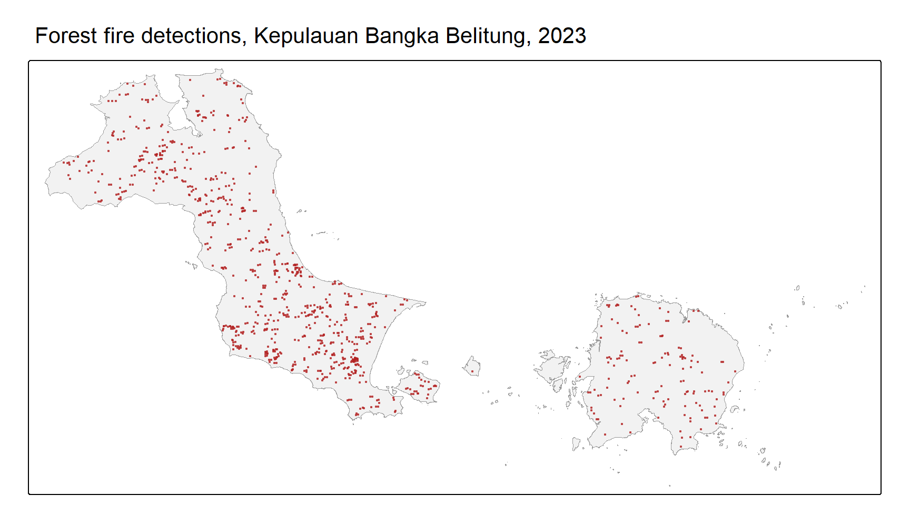
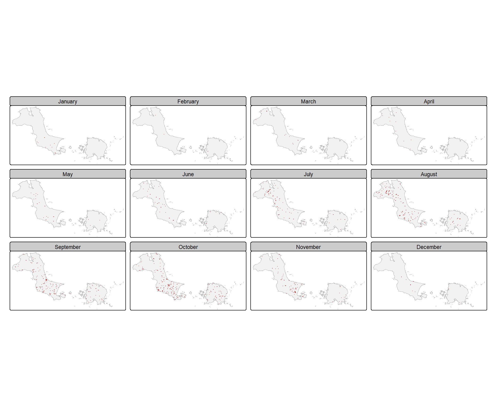
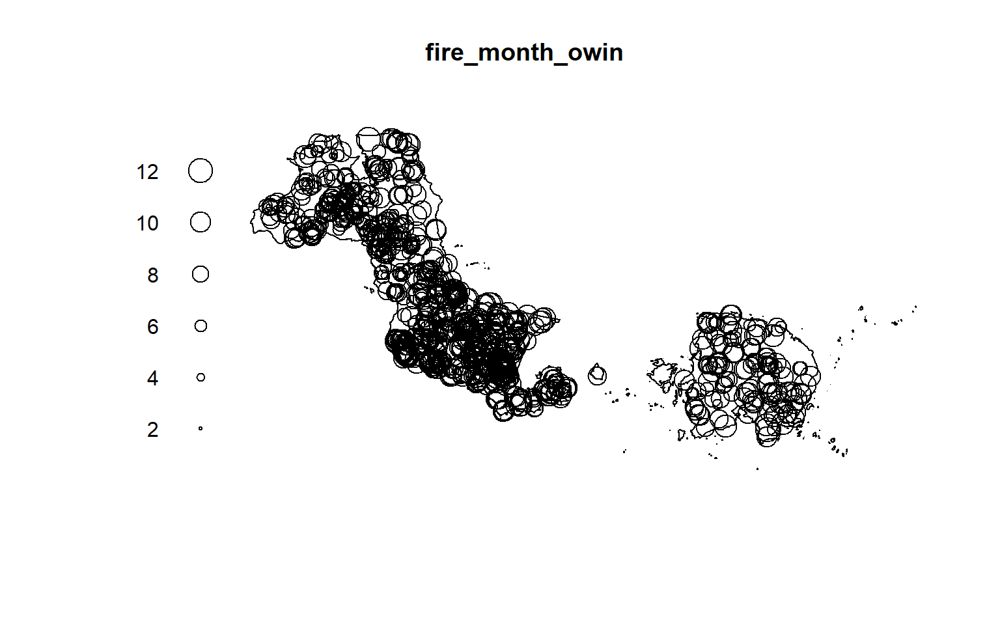
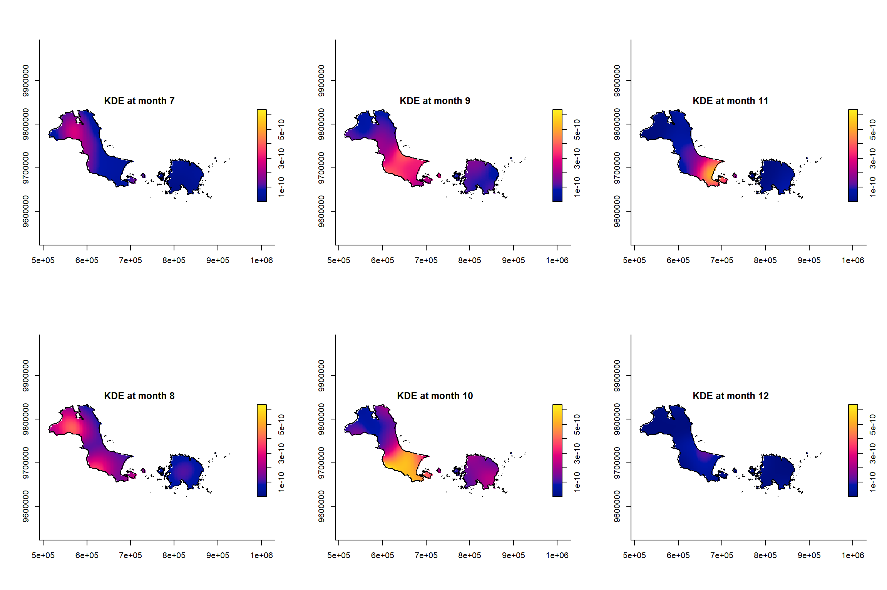
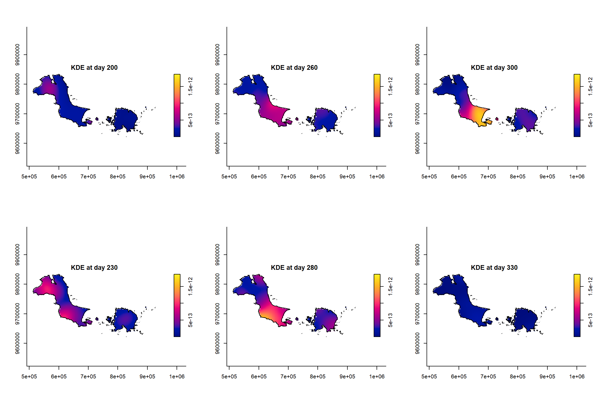
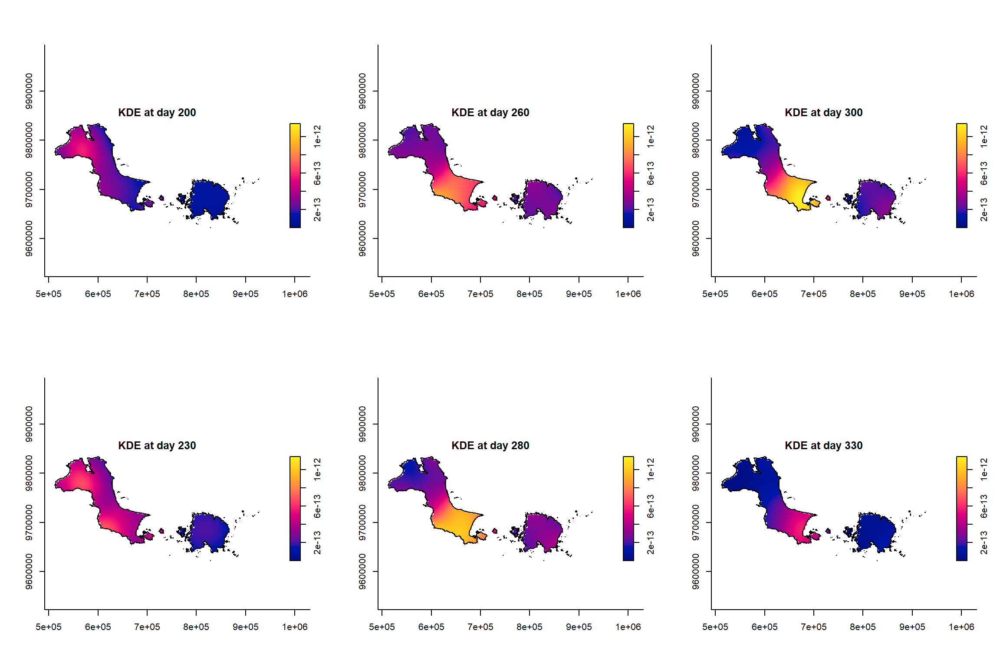
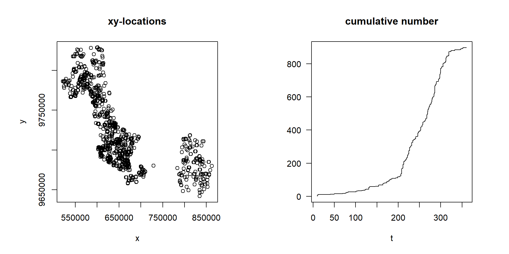

pacman::p_load(sf, raster, spatstat, sparr, stpp, tmap, tidyverse)Hands-on Exercise 3: Spatio-Temporal Point Patterns Analysis
Overview
A spatio-temporal point process, also called a space-time or spatial-temporal point process, is a random collection of points where each point represents the time and location of an event. Examples include the incidence of disease, sightings or births of a species, and the occurrence of fires, earthquakes, lightning strikes, tsunamis or volcanic eruptions.
The analysis of spatio-temporal point patterns is becoming increasingly necessary given the rapid emergence of geographically and temporally indexed data. This exercise combines several R packages to run a set of spatio-temporal point pattern analyses, using real-world forest fire events in Kepulauan Bangka Belitung, Indonesia from 1 January 2023 to 31 December 2023.
Learning Outcome
The research questions
The specific questions to be answered are:
- Are the locations of forest fire in Kepulauan Bangka Belitung spatially and spatio-temporally independent?
- If the answer is NO, where and when do the observed forest fire locations tend to cluster?
The Data
Two data sets are used:
| Dataset | Description | Source |
|---|---|---|
forestfires.csv |
Locations of forest fires detected by the Moderate Resolution Imaging Spectroradiometer (MODIS) sensor. Only fires within Kepulauan Bangka Belitung are used. | FIRMS |
Kepulauan_Bangka_Belitung |
ESRI shapefile of the sub-district (kelurahan) boundaries of Kepulauan Bangka Belitung | Indonesia Geospatial portal |
NoteHow this copy of the data differs from the textbook’s
The textbook’s files come from the Indonesia Geospatial portal and FIRMS’ authenticated archive. Neither is scriptable without an account, so the same two layers were rebuilt from open sources: the boundaries from GADM 4.1 at level 4, which is the kelurahan/desa level, and the fires from the FIRMS country archive for Indonesia 2023, clipped to the province.
The result is close but not identical, and the difference is worth stating:
| This exercise | Textbook | |
|---|---|---|
| Boundary polygons | 362 | 297 |
| Fire detections | 898 | 741 |
| Eastern extent | 108.85 E | 106.85 E |
The extent is the substantive difference. Belitung island lies between 107.5 E and 108.3 E, so the textbook’s boundary, despite the name Kepulauan Bangka Belitung, stops short of it and covers Bangka alone. Clipping to Bangka only gives 766 fires, which is much nearer the textbook’s 741; the remaining 132 fires are on Belitung.
The whole province is used here, since that is what the dataset is called and what the research question asks about. Every figure below therefore differs from the textbook’s, and the selected bandwidths differ with them.
Installing and Loading the R Packages
Six packages are used:
| Package | Role |
|---|---|
| sf | Importing, processing and wrangling geospatial data |
| raster | Handling raster data in R |
| spatstat | Spatial point patterns analysis |
| sparr | Fixed and adaptive kernel-smoothed spatial relative risk surfaces, and fixed-bandwidth spatio-temporal density estimation |
| tmap | Cartographic quality thematic maps |
| tidyverse | Data import, transformation, wrangling and visualisation |
stpp is added to the list for the space-time K-function in the final section.
Note
raster appears in the textbook’s package list but no raster object is created anywhere in this chapter, since the density surfaces stay as sparr objects and are drawn with base plot(). It is loaded here for consistency with the textbook, not because it is needed.
Importing and Preparing Study Area
Importing study area
The shapefile is imported, dissolved into a single outline with st_union(), stripped of its Z dimension, and reprojected to WGS 84 / UTM zone 48S (EPSG: 32748), the projected system appropriate for this part of Indonesia:
kbb_sf <- st_read(dsn = "data/rawdata",
layer = "Kepulauan_Bangka_Belitung") %>%
st_union() %>%
st_zm(drop = TRUE, what = "ZM") %>%
st_transform(crs = 32748)Reading layer `Kepulauan_Bangka_Belitung' from data source
`C:\Users\Imgigi\Desktop\629\hand-on-ex\hand-on-ex3\data\rawdata'
using driver `ESRI Shapefile'
Simple feature collection with 362 features and 7 fields
Geometry type: MULTIPOLYGON
Dimension: XY
Bounding box: xmin: 105.108 ymin: -3.416535 xmax: 108.848 ymax: -1.501757
Geodetic CRS: WGS 84st_union() matters here. The observation window for a point pattern must be a single region, not a collection of several hundred sub-district polygons, so the boundaries are dissolved before conversion.
Converting to owin
as.owin() converts kbb_sf into an owin object:
kbb_owin <- as.owin(kbb_sf)
kbb_owinwindow: polygonal boundary
enclosing rectangle: [512010.4, 928107.4] x [9621858, 9833989] unitsclass() confirms the output is indeed an owin object:
class(kbb_owin)[1] "owin"Importing and Preparing Forest Fire Data
The CSV carries longitude and latitude as ordinary columns, so st_as_sf() is used to build the geometry, declaring the coordinates as wgs84 before reprojecting to match the study area:
fire_sf <- read_csv("data/rawdata/forestfires.csv") %>%
st_as_sf(coords = c("longitude", "latitude"),
crs = 4326) %>%
st_transform(crs = 32748)A ppp object accepts only numeric or character values as marks, so the acquisition date is converted into three separate numeric and factor fields:
fire_sf <- fire_sf %>%
mutate(DayofYear = yday(acq_date)) %>%
mutate(Month_num = month(acq_date)) %>%
mutate(Month_fac = month(acq_date,
label = TRUE,
abbr = FALSE))Visualising the Fire Points
Overall plot
tm_shape(kbb_sf) +
tm_polygons(fill = "grey95", col = "grey60", lwd = 0.5) +
tm_shape(fire_sf) +
tm_dots(size = 0.15, fill = "firebrick", fill_alpha = 0.6) +
tm_title("Forest fire detections, Kepulauan Bangka Belitung, 2023")
Visualising geographic distribution of forest fires by month
tm_facets() splits the same map by the month factor, so the seasonal movement of the fires becomes visible:
tm_shape(kbb_sf) +
tm_polygons(fill = "grey95", col = "grey70", lwd = 0.4) +
tm_shape(fire_sf) +
tm_dots(size = 0.1, fill = "firebrick", fill_alpha = 0.6) +
tm_facets_wrap(by = "Month_fac",
ncol = 4,
free.coords = FALSE,
drop.units = TRUE)
Computing STKDE by Month
This section computes the spatio-temporal KDE using spattemp.density() of the sparr package.
Extracting forest fires by month
as.ppp() needs only the mark field and the geometry field, so the unwanted columns are dropped first:
fire_month <- fire_sf %>%
select(Month_num)Creating ppp
fire_month_ppp <- as.ppp(fire_month)
fire_month_pppMarked planar point pattern: 898 points
marks are numeric, of storage type 'double'
window: rectangle = [521564.1, 862416.4] x [9642001, 9828767] unitssummary(fire_month_ppp)Marked planar point pattern: 898 points
Average intensity 1.410627e-08 points per square unit
Coordinates are given to 10 decimal places
marks are numeric, of type 'double'
Summary:
Min. 1st Qu. Median Mean 3rd Qu. Max.
1.000 8.000 9.000 8.643 10.000 12.000
Window: rectangle = [521564.1, 862416.4] x [9642001, 9828767] units
(340900 x 186800 units)
Window area = 63659700000 square unitsChecking for duplicated point events:
any(duplicated(fire_month_ppp))[1] FALSEIncluding owin object
Combining the point events with the study area window:
fire_month_owin <- fire_month_ppp[kbb_owin]
summary(fire_month_owin)Marked planar point pattern: 898 points
Average intensity 5.357491e-08 points per square unit
Coordinates are given to 10 decimal places
marks are numeric, of type 'double'
Summary:
Min. 1st Qu. Median Mean 3rd Qu. Max.
1.000 8.000 9.000 8.643 10.000 12.000
Window: polygonal boundary
270 separate polygons (no holes)
vertices area relative.area
polygon 1 8736 1.15970e+10 6.92e-01
polygon 2 6 5.15790e+04 3.08e-06
polygon 3 7 9.35325e+04 5.58e-06
polygon 4 20 1.26679e+04 7.56e-07
polygon 5 23 9.26107e+04 5.53e-06
polygon 6 18 4.98850e+05 2.98e-05
polygon 7 30 3.37290e+04 2.01e-06
polygon 8 54 3.25363e+05 1.94e-05
polygon 9 33 1.30250e+06 7.77e-05
polygon 10 132 1.16490e+06 6.95e-05
polygon 11 69 1.91355e+05 1.14e-05
polygon 12 117 1.51905e+05 9.06e-06
polygon 13 95 1.14409e+05 6.83e-06
polygon 14 22 4.54503e+03 2.71e-07
polygon 15 25 1.18153e+04 7.05e-07
polygon 16 131 1.52345e+05 9.09e-06
polygon 17 39 1.07779e+04 6.43e-07
polygon 18 54 3.46837e+05 2.07e-05
polygon 19 72 2.15853e+05 1.29e-05
polygon 20 16 1.85061e+03 1.10e-07
polygon 21 79 1.05702e+05 6.31e-06
polygon 22 20 4.26450e+03 2.54e-07
polygon 23 119 1.64729e+05 9.83e-06
polygon 24 40 1.16146e+04 6.93e-07
polygon 25 16 3.52284e+03 2.10e-07
polygon 26 328 3.08592e+06 1.84e-04
polygon 27 191 2.36937e+06 1.41e-04
polygon 28 77 8.82506e+04 5.27e-06
polygon 29 49 6.13179e+04 3.66e-06
polygon 30 121 7.64910e+04 4.56e-06
polygon 31 5 1.73815e+04 1.04e-06
polygon 32 5944 4.61753e+09 2.75e-01
polygon 33 4 6.39020e+03 3.81e-07
polygon 34 16 1.18396e+05 7.06e-06
polygon 35 5 2.11407e+04 1.26e-06
polygon 36 11 3.52360e+04 2.10e-06
polygon 37 13 6.20570e+04 3.70e-06
polygon 38 8 1.23128e+04 7.35e-07
polygon 39 5 9.16907e+03 5.47e-07
polygon 40 31 1.54528e+06 9.22e-05
polygon 41 13 6.02786e+04 3.60e-06
polygon 42 19 8.71573e+04 5.20e-06
polygon 43 15 6.16242e+04 3.68e-06
polygon 44 8 1.56726e+04 9.35e-07
polygon 45 6 1.35363e+04 8.08e-07
polygon 46 4 4.29360e+03 2.56e-07
polygon 47 23 1.77052e+05 1.06e-05
polygon 48 45 4.35839e+04 2.60e-06
polygon 49 5 6.83224e+03 4.08e-07
polygon 50 5 6.68328e+03 3.99e-07
polygon 51 5 2.25570e+03 1.35e-07
polygon 52 7 2.61716e+04 1.56e-06
polygon 53 9 1.20125e+04 7.17e-07
polygon 54 8 2.24884e+04 1.34e-06
polygon 55 6 1.21058e+04 7.22e-07
polygon 56 5 8.79539e+03 5.25e-07
polygon 57 9 2.28045e+04 1.36e-06
polygon 58 6 9.20554e+03 5.49e-07
polygon 59 49 1.00131e+05 5.97e-06
polygon 60 5 4.47493e+03 2.67e-07
polygon 61 4 2.88084e+03 1.72e-07
polygon 62 4 3.66452e+03 2.19e-07
polygon 63 69 9.92186e+04 5.92e-06
polygon 64 5 3.03623e+03 1.81e-07
polygon 65 6 1.05413e+04 6.29e-07
polygon 66 8 9.42911e+03 5.63e-07
polygon 67 13 6.94883e+04 4.15e-06
polygon 68 34 2.01331e+05 1.20e-05
polygon 69 227 1.23408e+06 7.36e-05
polygon 70 4 2.59824e+03 1.55e-07
polygon 71 7 8.47540e+03 5.06e-07
polygon 72 5 8.12486e+03 4.85e-07
polygon 73 95 2.08341e+05 1.24e-05
polygon 74 18 7.79145e+04 4.65e-06
polygon 75 24 1.59007e+04 9.49e-07
polygon 76 4 8.81028e+02 5.26e-08
polygon 77 43 4.25653e+04 2.54e-06
polygon 78 5 4.41923e+03 2.64e-07
polygon 79 4 2.43914e+03 1.46e-07
polygon 80 5 4.71226e+03 2.81e-07
polygon 81 217 2.22687e+06 1.33e-04
polygon 82 63 5.45427e+04 3.25e-06
polygon 83 6 4.61991e+03 2.76e-07
polygon 84 6 1.47370e+04 8.79e-07
polygon 85 6 1.35588e+04 8.09e-07
polygon 86 51 9.00805e+04 5.37e-06
polygon 87 4 1.55335e+03 9.27e-08
polygon 88 32 4.34625e+04 2.59e-06
polygon 89 146 5.46576e+05 3.26e-05
polygon 90 36 7.39133e+04 4.41e-06
polygon 91 42 9.17378e+04 5.47e-06
polygon 92 141 1.10143e+06 6.57e-05
polygon 93 96 2.55421e+05 1.52e-05
polygon 94 75 3.74798e+04 2.24e-06
polygon 95 71 9.11194e+05 5.44e-05
polygon 96 5 4.25220e+03 2.54e-07
polygon 97 48 1.10263e+05 6.58e-06
polygon 98 6 1.00670e+04 6.01e-07
polygon 99 33 2.35513e+04 1.41e-06
polygon 100 4 1.39953e+02 8.35e-09
polygon 101 120 3.80319e+05 2.27e-05
polygon 102 19 3.13896e+04 1.87e-06
polygon 103 42 1.21247e+05 7.23e-06
polygon 104 24 3.83865e+04 2.29e-06
polygon 105 88 4.57022e+05 2.73e-05
polygon 106 20 1.78068e+04 1.06e-06
polygon 107 20 2.39368e+04 1.43e-06
polygon 108 5 6.64860e+03 3.97e-07
polygon 109 5 5.41661e+03 3.23e-07
polygon 110 53 4.54957e+05 2.71e-05
polygon 111 263 1.76196e+07 1.05e-03
polygon 112 4 6.76374e+03 4.04e-07
polygon 113 17 5.83732e+03 3.48e-07
polygon 114 25 2.16843e+05 1.29e-05
polygon 115 9 3.13706e+03 1.87e-07
polygon 116 10 1.13374e+04 6.76e-07
polygon 117 45 1.05289e+05 6.28e-06
polygon 118 7 4.71437e+03 2.81e-07
polygon 119 527 4.88599e+07 2.91e-03
polygon 120 632 1.19875e+08 7.15e-03
polygon 121 68 3.72752e+06 2.22e-04
polygon 122 10 1.01946e+05 6.08e-06
polygon 123 19 8.27040e+04 4.93e-06
polygon 124 17 4.01684e+04 2.40e-06
polygon 125 11 4.06518e+04 2.43e-06
polygon 126 111 1.46837e+06 8.76e-05
polygon 127 110 3.73961e+06 2.23e-04
polygon 128 19 1.91715e+04 1.14e-06
polygon 129 73 3.61882e+06 2.16e-04
polygon 130 10 3.05396e+04 1.82e-06
polygon 131 6 1.63086e+04 9.73e-07
polygon 132 81 2.65410e+05 1.58e-05
polygon 133 8 2.10497e+04 1.26e-06
polygon 134 9 2.23051e+04 1.33e-06
polygon 135 11 1.96429e+04 1.17e-06
polygon 136 145 7.13724e+06 4.26e-04
polygon 137 60 1.45303e+05 8.67e-06
polygon 138 74 2.06450e+06 1.23e-04
polygon 139 36 2.64395e+04 1.58e-06
polygon 140 926 2.12401e+08 1.27e-02
polygon 141 25 2.21142e+05 1.32e-05
polygon 142 6 6.85335e+03 4.09e-07
polygon 143 31 1.67739e+06 1.00e-04
polygon 144 7 8.96845e+03 5.35e-07
polygon 145 12 6.31109e+04 3.77e-06
polygon 146 202 2.25183e+07 1.34e-03
polygon 147 46 2.39836e+06 1.43e-04
polygon 148 34 1.06861e+04 6.38e-07
polygon 149 8 4.62274e+04 2.76e-06
polygon 150 7 3.16257e+04 1.89e-06
polygon 151 5 6.47214e+03 3.86e-07
polygon 152 12 2.17322e+04 1.30e-06
polygon 153 5 7.20136e+03 4.30e-07
polygon 154 160 1.11856e+06 6.67e-05
polygon 155 105 3.97161e+05 2.37e-05
polygon 156 14 3.77546e+05 2.25e-05
polygon 157 27 1.21328e+06 7.24e-05
polygon 158 132 7.32320e+05 4.37e-05
polygon 159 52 6.46488e+04 3.86e-06
polygon 160 59 5.31644e+06 3.17e-04
polygon 161 48 1.76605e+06 1.05e-04
polygon 162 34 5.03181e+04 3.00e-06
polygon 163 49 1.83632e+04 1.10e-06
polygon 164 19 5.31559e+03 3.17e-07
polygon 165 246 3.09440e+06 1.85e-04
polygon 166 28 1.99191e+05 1.19e-05
polygon 167 19 4.51980e+05 2.70e-05
polygon 168 14 5.66638e+04 3.38e-06
polygon 169 12 1.09882e+05 6.56e-06
polygon 170 41 4.25466e+04 2.54e-06
polygon 171 189 1.69035e+06 1.01e-04
polygon 172 118 2.32814e+05 1.39e-05
polygon 173 7 2.79374e+04 1.67e-06
polygon 174 53 1.72586e+06 1.03e-04
polygon 175 13 6.36463e+04 3.80e-06
polygon 176 156 1.14531e+06 6.83e-05
polygon 177 47 9.13932e+05 5.45e-05
polygon 178 62 3.95152e+06 2.36e-04
polygon 179 155 7.75116e+05 4.62e-05
polygon 180 14 4.20349e+04 2.51e-06
polygon 181 18 5.14007e+03 3.07e-07
polygon 182 31 7.44696e+05 4.44e-05
polygon 183 18 4.11037e+05 2.45e-05
polygon 184 23 7.72702e+03 4.61e-07
polygon 185 8 3.85828e+04 2.30e-06
polygon 186 180 7.46362e+06 4.45e-04
polygon 187 14 2.75557e+05 1.64e-05
polygon 188 4 9.17061e+03 5.47e-07
polygon 189 9 9.64342e+03 5.75e-07
polygon 190 9 6.16694e+04 3.68e-06
polygon 191 10 1.05264e+05 6.28e-06
polygon 192 8 8.74118e+04 5.22e-06
polygon 193 5 1.83999e+04 1.10e-06
polygon 194 5 3.32417e+03 1.98e-07
polygon 195 13 3.15953e+04 1.88e-06
polygon 196 67 3.93589e+05 2.35e-05
polygon 197 4 2.84280e+03 1.70e-07
polygon 198 16 4.94144e+03 2.95e-07
polygon 199 4 1.27360e+03 7.60e-08
polygon 200 8 1.67265e+04 9.98e-07
polygon 201 12 2.45940e+04 1.47e-06
polygon 202 12 5.95411e+04 3.55e-06
polygon 203 14 2.19831e+03 1.31e-07
polygon 204 14 4.32480e+03 2.58e-07
polygon 205 17 7.75234e+03 4.63e-07
polygon 206 13 1.86854e+03 1.11e-07
polygon 207 34 3.85424e+06 2.30e-04
polygon 208 9 3.58530e+03 2.14e-07
polygon 209 15 1.41276e+04 8.43e-07
polygon 210 27 1.42520e+04 8.50e-07
polygon 211 38 2.66059e+04 1.59e-06
polygon 212 22 4.51365e+03 2.69e-07
polygon 213 96 5.26123e+05 3.14e-05
polygon 214 60 1.00574e+05 6.00e-06
polygon 215 31 7.13409e+04 4.26e-06
polygon 216 37 1.08935e+06 6.50e-05
polygon 217 179 8.26972e+05 4.93e-05
polygon 218 59 1.99001e+05 1.19e-05
polygon 219 47 2.81875e+05 1.68e-05
polygon 220 115 3.13327e+05 1.87e-05
polygon 221 133 4.76117e+05 2.84e-05
polygon 222 97 1.63408e+07 9.75e-04
polygon 223 19 6.38976e+03 3.81e-07
polygon 224 10 7.75421e+03 4.63e-07
polygon 225 204 1.42141e+06 8.48e-05
polygon 226 125 2.33616e+06 1.39e-04
polygon 227 31 2.58857e+04 1.54e-06
polygon 228 25 2.06725e+04 1.23e-06
polygon 229 87 1.25180e+06 7.47e-05
polygon 230 38 4.03858e+04 2.41e-06
polygon 231 10 5.04629e+04 3.01e-06
polygon 232 6 1.12888e+04 6.73e-07
polygon 233 40 1.56849e+05 9.36e-06
polygon 234 66 5.25038e+04 3.13e-06
polygon 235 8 1.10747e+04 6.61e-07
polygon 236 10 1.50784e+03 9.00e-08
polygon 237 14 4.55332e+03 2.72e-07
polygon 238 41 4.12940e+04 2.46e-06
polygon 239 7 3.04017e+03 1.81e-07
polygon 240 19 7.53923e+03 4.50e-07
polygon 241 18 8.35187e+03 4.98e-07
polygon 242 26 5.16261e+05 3.08e-05
polygon 243 13 9.24908e+04 5.52e-06
polygon 244 25 4.18653e+04 2.50e-06
polygon 245 7 3.83476e+03 2.29e-07
polygon 246 82 4.38420e+05 2.62e-05
polygon 247 164 3.46334e+06 2.07e-04
polygon 248 11 5.20050e+03 3.10e-07
polygon 249 13 3.27494e+04 1.95e-06
polygon 250 6 3.01213e+04 1.80e-06
polygon 251 13 2.03114e+05 1.21e-05
polygon 252 38 2.87869e+04 1.72e-06
polygon 253 14 4.11781e+03 2.46e-07
polygon 254 44 1.67050e+05 9.97e-06
polygon 255 11 6.66399e+04 3.98e-06
polygon 256 129 2.29310e+06 1.37e-04
polygon 257 22 6.48307e+03 3.87e-07
polygon 258 107 1.06884e+06 6.38e-05
polygon 259 9 2.30080e+04 1.37e-06
polygon 260 34 9.10976e+03 5.43e-07
polygon 261 72 1.08609e+05 6.48e-06
polygon 262 64 2.19815e+05 1.31e-05
polygon 263 25 2.57976e+05 1.54e-05
polygon 264 26 4.60002e+04 2.74e-06
polygon 265 57 8.30086e+04 4.95e-06
polygon 266 83 1.14012e+06 6.80e-05
polygon 267 11 3.01000e+04 1.80e-06
polygon 268 14 1.30459e+05 7.78e-06
polygon 269 22 2.37055e+05 1.41e-05
polygon 270 22 1.84821e+05 1.10e-05
enclosing rectangle: [512010.4, 928107.4] x [9621858, 9833989] units
(416100 x 212100 units)
Window area = 16761600000 square units
Fraction of frame area: 0.19Plotting the result to confirm it is correct:
plot(fire_month_owin)
Computing spatio-temporal KDE
spattemp.density() estimates the density over space and time jointly. With no bandwidths supplied it selects both automatically, an isotropic spatial bandwidth h and a temporal bandwidth lambda:
st_kde <- spattemp.density(fire_month_owin)
summary(st_kde)Spatiotemporal Kernel Density Estimate
Bandwidths
h = 19142.08 (spatial)
lambda = 0.0265 (temporal)
No. of observations
898
Spatial bound
Type: polygonal
2D enclosure: [512010.4, 928107.4] x [9621858, 9833989]
Temporal bound
[1, 12]
Evaluation
128 x 128 x 12 trivariate lattice
Density range: [1.087787e-39, 6.380959e-10]Plotting the spatio-temporal KDE object
The estimate is a stack of surfaces, one per time slice. Plotting July to December shows the second half of the year, when the fires concentrate:
tims <- c(7, 8, 9, 10, 11, 12)
par(mfcol = c(2, 3))
for (i in tims) {
plot(st_kde, i,
override.par = FALSE,
fix.range = TRUE,
main = paste("KDE at month", i))
}
fix.range = TRUE holds the colour scale constant across the six panels, so a given colour means the same density in every month. Without it each panel is scaled to its own range and the months cannot be compared.
Computing STKDE by Day of Year
The same estimation is repeated at daily resolution.
Creating ppp object
fire_yday_ppp <- fire_sf %>%
select(DayofYear) %>%
as.ppp()Including owin object
fire_yday_owin <- fire_yday_ppp[kbb_owin]
summary(fire_yday_owin)Marked planar point pattern: 898 points
Average intensity 5.357491e-08 points per square unit
Coordinates are given to 10 decimal places
marks are numeric, of type 'double'
Summary:
Min. 1st Qu. Median Mean 3rd Qu. Max.
10.0 218.5 259.5 247.7 288.0 360.0
Window: polygonal boundary
270 separate polygons (no holes)
vertices area relative.area
polygon 1 8736 1.15970e+10 6.92e-01
polygon 2 6 5.15790e+04 3.08e-06
polygon 3 7 9.35325e+04 5.58e-06
polygon 4 20 1.26679e+04 7.56e-07
polygon 5 23 9.26107e+04 5.53e-06
polygon 6 18 4.98850e+05 2.98e-05
polygon 7 30 3.37290e+04 2.01e-06
polygon 8 54 3.25363e+05 1.94e-05
polygon 9 33 1.30250e+06 7.77e-05
polygon 10 132 1.16490e+06 6.95e-05
polygon 11 69 1.91355e+05 1.14e-05
polygon 12 117 1.51905e+05 9.06e-06
polygon 13 95 1.14409e+05 6.83e-06
polygon 14 22 4.54503e+03 2.71e-07
polygon 15 25 1.18153e+04 7.05e-07
polygon 16 131 1.52345e+05 9.09e-06
polygon 17 39 1.07779e+04 6.43e-07
polygon 18 54 3.46837e+05 2.07e-05
polygon 19 72 2.15853e+05 1.29e-05
polygon 20 16 1.85061e+03 1.10e-07
polygon 21 79 1.05702e+05 6.31e-06
polygon 22 20 4.26450e+03 2.54e-07
polygon 23 119 1.64729e+05 9.83e-06
polygon 24 40 1.16146e+04 6.93e-07
polygon 25 16 3.52284e+03 2.10e-07
polygon 26 328 3.08592e+06 1.84e-04
polygon 27 191 2.36937e+06 1.41e-04
polygon 28 77 8.82506e+04 5.27e-06
polygon 29 49 6.13179e+04 3.66e-06
polygon 30 121 7.64910e+04 4.56e-06
polygon 31 5 1.73815e+04 1.04e-06
polygon 32 5944 4.61753e+09 2.75e-01
polygon 33 4 6.39020e+03 3.81e-07
polygon 34 16 1.18396e+05 7.06e-06
polygon 35 5 2.11407e+04 1.26e-06
polygon 36 11 3.52360e+04 2.10e-06
polygon 37 13 6.20570e+04 3.70e-06
polygon 38 8 1.23128e+04 7.35e-07
polygon 39 5 9.16907e+03 5.47e-07
polygon 40 31 1.54528e+06 9.22e-05
polygon 41 13 6.02786e+04 3.60e-06
polygon 42 19 8.71573e+04 5.20e-06
polygon 43 15 6.16242e+04 3.68e-06
polygon 44 8 1.56726e+04 9.35e-07
polygon 45 6 1.35363e+04 8.08e-07
polygon 46 4 4.29360e+03 2.56e-07
polygon 47 23 1.77052e+05 1.06e-05
polygon 48 45 4.35839e+04 2.60e-06
polygon 49 5 6.83224e+03 4.08e-07
polygon 50 5 6.68328e+03 3.99e-07
polygon 51 5 2.25570e+03 1.35e-07
polygon 52 7 2.61716e+04 1.56e-06
polygon 53 9 1.20125e+04 7.17e-07
polygon 54 8 2.24884e+04 1.34e-06
polygon 55 6 1.21058e+04 7.22e-07
polygon 56 5 8.79539e+03 5.25e-07
polygon 57 9 2.28045e+04 1.36e-06
polygon 58 6 9.20554e+03 5.49e-07
polygon 59 49 1.00131e+05 5.97e-06
polygon 60 5 4.47493e+03 2.67e-07
polygon 61 4 2.88084e+03 1.72e-07
polygon 62 4 3.66452e+03 2.19e-07
polygon 63 69 9.92186e+04 5.92e-06
polygon 64 5 3.03623e+03 1.81e-07
polygon 65 6 1.05413e+04 6.29e-07
polygon 66 8 9.42911e+03 5.63e-07
polygon 67 13 6.94883e+04 4.15e-06
polygon 68 34 2.01331e+05 1.20e-05
polygon 69 227 1.23408e+06 7.36e-05
polygon 70 4 2.59824e+03 1.55e-07
polygon 71 7 8.47540e+03 5.06e-07
polygon 72 5 8.12486e+03 4.85e-07
polygon 73 95 2.08341e+05 1.24e-05
polygon 74 18 7.79145e+04 4.65e-06
polygon 75 24 1.59007e+04 9.49e-07
polygon 76 4 8.81028e+02 5.26e-08
polygon 77 43 4.25653e+04 2.54e-06
polygon 78 5 4.41923e+03 2.64e-07
polygon 79 4 2.43914e+03 1.46e-07
polygon 80 5 4.71226e+03 2.81e-07
polygon 81 217 2.22687e+06 1.33e-04
polygon 82 63 5.45427e+04 3.25e-06
polygon 83 6 4.61991e+03 2.76e-07
polygon 84 6 1.47370e+04 8.79e-07
polygon 85 6 1.35588e+04 8.09e-07
polygon 86 51 9.00805e+04 5.37e-06
polygon 87 4 1.55335e+03 9.27e-08
polygon 88 32 4.34625e+04 2.59e-06
polygon 89 146 5.46576e+05 3.26e-05
polygon 90 36 7.39133e+04 4.41e-06
polygon 91 42 9.17378e+04 5.47e-06
polygon 92 141 1.10143e+06 6.57e-05
polygon 93 96 2.55421e+05 1.52e-05
polygon 94 75 3.74798e+04 2.24e-06
polygon 95 71 9.11194e+05 5.44e-05
polygon 96 5 4.25220e+03 2.54e-07
polygon 97 48 1.10263e+05 6.58e-06
polygon 98 6 1.00670e+04 6.01e-07
polygon 99 33 2.35513e+04 1.41e-06
polygon 100 4 1.39953e+02 8.35e-09
polygon 101 120 3.80319e+05 2.27e-05
polygon 102 19 3.13896e+04 1.87e-06
polygon 103 42 1.21247e+05 7.23e-06
polygon 104 24 3.83865e+04 2.29e-06
polygon 105 88 4.57022e+05 2.73e-05
polygon 106 20 1.78068e+04 1.06e-06
polygon 107 20 2.39368e+04 1.43e-06
polygon 108 5 6.64860e+03 3.97e-07
polygon 109 5 5.41661e+03 3.23e-07
polygon 110 53 4.54957e+05 2.71e-05
polygon 111 263 1.76196e+07 1.05e-03
polygon 112 4 6.76374e+03 4.04e-07
polygon 113 17 5.83732e+03 3.48e-07
polygon 114 25 2.16843e+05 1.29e-05
polygon 115 9 3.13706e+03 1.87e-07
polygon 116 10 1.13374e+04 6.76e-07
polygon 117 45 1.05289e+05 6.28e-06
polygon 118 7 4.71437e+03 2.81e-07
polygon 119 527 4.88599e+07 2.91e-03
polygon 120 632 1.19875e+08 7.15e-03
polygon 121 68 3.72752e+06 2.22e-04
polygon 122 10 1.01946e+05 6.08e-06
polygon 123 19 8.27040e+04 4.93e-06
polygon 124 17 4.01684e+04 2.40e-06
polygon 125 11 4.06518e+04 2.43e-06
polygon 126 111 1.46837e+06 8.76e-05
polygon 127 110 3.73961e+06 2.23e-04
polygon 128 19 1.91715e+04 1.14e-06
polygon 129 73 3.61882e+06 2.16e-04
polygon 130 10 3.05396e+04 1.82e-06
polygon 131 6 1.63086e+04 9.73e-07
polygon 132 81 2.65410e+05 1.58e-05
polygon 133 8 2.10497e+04 1.26e-06
polygon 134 9 2.23051e+04 1.33e-06
polygon 135 11 1.96429e+04 1.17e-06
polygon 136 145 7.13724e+06 4.26e-04
polygon 137 60 1.45303e+05 8.67e-06
polygon 138 74 2.06450e+06 1.23e-04
polygon 139 36 2.64395e+04 1.58e-06
polygon 140 926 2.12401e+08 1.27e-02
polygon 141 25 2.21142e+05 1.32e-05
polygon 142 6 6.85335e+03 4.09e-07
polygon 143 31 1.67739e+06 1.00e-04
polygon 144 7 8.96845e+03 5.35e-07
polygon 145 12 6.31109e+04 3.77e-06
polygon 146 202 2.25183e+07 1.34e-03
polygon 147 46 2.39836e+06 1.43e-04
polygon 148 34 1.06861e+04 6.38e-07
polygon 149 8 4.62274e+04 2.76e-06
polygon 150 7 3.16257e+04 1.89e-06
polygon 151 5 6.47214e+03 3.86e-07
polygon 152 12 2.17322e+04 1.30e-06
polygon 153 5 7.20136e+03 4.30e-07
polygon 154 160 1.11856e+06 6.67e-05
polygon 155 105 3.97161e+05 2.37e-05
polygon 156 14 3.77546e+05 2.25e-05
polygon 157 27 1.21328e+06 7.24e-05
polygon 158 132 7.32320e+05 4.37e-05
polygon 159 52 6.46488e+04 3.86e-06
polygon 160 59 5.31644e+06 3.17e-04
polygon 161 48 1.76605e+06 1.05e-04
polygon 162 34 5.03181e+04 3.00e-06
polygon 163 49 1.83632e+04 1.10e-06
polygon 164 19 5.31559e+03 3.17e-07
polygon 165 246 3.09440e+06 1.85e-04
polygon 166 28 1.99191e+05 1.19e-05
polygon 167 19 4.51980e+05 2.70e-05
polygon 168 14 5.66638e+04 3.38e-06
polygon 169 12 1.09882e+05 6.56e-06
polygon 170 41 4.25466e+04 2.54e-06
polygon 171 189 1.69035e+06 1.01e-04
polygon 172 118 2.32814e+05 1.39e-05
polygon 173 7 2.79374e+04 1.67e-06
polygon 174 53 1.72586e+06 1.03e-04
polygon 175 13 6.36463e+04 3.80e-06
polygon 176 156 1.14531e+06 6.83e-05
polygon 177 47 9.13932e+05 5.45e-05
polygon 178 62 3.95152e+06 2.36e-04
polygon 179 155 7.75116e+05 4.62e-05
polygon 180 14 4.20349e+04 2.51e-06
polygon 181 18 5.14007e+03 3.07e-07
polygon 182 31 7.44696e+05 4.44e-05
polygon 183 18 4.11037e+05 2.45e-05
polygon 184 23 7.72702e+03 4.61e-07
polygon 185 8 3.85828e+04 2.30e-06
polygon 186 180 7.46362e+06 4.45e-04
polygon 187 14 2.75557e+05 1.64e-05
polygon 188 4 9.17061e+03 5.47e-07
polygon 189 9 9.64342e+03 5.75e-07
polygon 190 9 6.16694e+04 3.68e-06
polygon 191 10 1.05264e+05 6.28e-06
polygon 192 8 8.74118e+04 5.22e-06
polygon 193 5 1.83999e+04 1.10e-06
polygon 194 5 3.32417e+03 1.98e-07
polygon 195 13 3.15953e+04 1.88e-06
polygon 196 67 3.93589e+05 2.35e-05
polygon 197 4 2.84280e+03 1.70e-07
polygon 198 16 4.94144e+03 2.95e-07
polygon 199 4 1.27360e+03 7.60e-08
polygon 200 8 1.67265e+04 9.98e-07
polygon 201 12 2.45940e+04 1.47e-06
polygon 202 12 5.95411e+04 3.55e-06
polygon 203 14 2.19831e+03 1.31e-07
polygon 204 14 4.32480e+03 2.58e-07
polygon 205 17 7.75234e+03 4.63e-07
polygon 206 13 1.86854e+03 1.11e-07
polygon 207 34 3.85424e+06 2.30e-04
polygon 208 9 3.58530e+03 2.14e-07
polygon 209 15 1.41276e+04 8.43e-07
polygon 210 27 1.42520e+04 8.50e-07
polygon 211 38 2.66059e+04 1.59e-06
polygon 212 22 4.51365e+03 2.69e-07
polygon 213 96 5.26123e+05 3.14e-05
polygon 214 60 1.00574e+05 6.00e-06
polygon 215 31 7.13409e+04 4.26e-06
polygon 216 37 1.08935e+06 6.50e-05
polygon 217 179 8.26972e+05 4.93e-05
polygon 218 59 1.99001e+05 1.19e-05
polygon 219 47 2.81875e+05 1.68e-05
polygon 220 115 3.13327e+05 1.87e-05
polygon 221 133 4.76117e+05 2.84e-05
polygon 222 97 1.63408e+07 9.75e-04
polygon 223 19 6.38976e+03 3.81e-07
polygon 224 10 7.75421e+03 4.63e-07
polygon 225 204 1.42141e+06 8.48e-05
polygon 226 125 2.33616e+06 1.39e-04
polygon 227 31 2.58857e+04 1.54e-06
polygon 228 25 2.06725e+04 1.23e-06
polygon 229 87 1.25180e+06 7.47e-05
polygon 230 38 4.03858e+04 2.41e-06
polygon 231 10 5.04629e+04 3.01e-06
polygon 232 6 1.12888e+04 6.73e-07
polygon 233 40 1.56849e+05 9.36e-06
polygon 234 66 5.25038e+04 3.13e-06
polygon 235 8 1.10747e+04 6.61e-07
polygon 236 10 1.50784e+03 9.00e-08
polygon 237 14 4.55332e+03 2.72e-07
polygon 238 41 4.12940e+04 2.46e-06
polygon 239 7 3.04017e+03 1.81e-07
polygon 240 19 7.53923e+03 4.50e-07
polygon 241 18 8.35187e+03 4.98e-07
polygon 242 26 5.16261e+05 3.08e-05
polygon 243 13 9.24908e+04 5.52e-06
polygon 244 25 4.18653e+04 2.50e-06
polygon 245 7 3.83476e+03 2.29e-07
polygon 246 82 4.38420e+05 2.62e-05
polygon 247 164 3.46334e+06 2.07e-04
polygon 248 11 5.20050e+03 3.10e-07
polygon 249 13 3.27494e+04 1.95e-06
polygon 250 6 3.01213e+04 1.80e-06
polygon 251 13 2.03114e+05 1.21e-05
polygon 252 38 2.87869e+04 1.72e-06
polygon 253 14 4.11781e+03 2.46e-07
polygon 254 44 1.67050e+05 9.97e-06
polygon 255 11 6.66399e+04 3.98e-06
polygon 256 129 2.29310e+06 1.37e-04
polygon 257 22 6.48307e+03 3.87e-07
polygon 258 107 1.06884e+06 6.38e-05
polygon 259 9 2.30080e+04 1.37e-06
polygon 260 34 9.10976e+03 5.43e-07
polygon 261 72 1.08609e+05 6.48e-06
polygon 262 64 2.19815e+05 1.31e-05
polygon 263 25 2.57976e+05 1.54e-05
polygon 264 26 4.60002e+04 2.74e-06
polygon 265 57 8.30086e+04 4.95e-06
polygon 266 83 1.14012e+06 6.80e-05
polygon 267 11 3.01000e+04 1.80e-06
polygon 268 14 1.30459e+05 7.78e-06
polygon 269 22 2.37055e+05 1.41e-05
polygon 270 22 1.84821e+05 1.10e-05
enclosing rectangle: [512010.4, 928107.4] x [9621858, 9833989] units
(416100 x 212100 units)
Window area = 16761600000 square units
Fraction of frame area: 0.19Computing the STKDE
kde_yday <- spattemp.density(fire_yday_owin)
summary(kde_yday)Spatiotemporal Kernel Density Estimate
Bandwidths
h = 19142.08 (spatial)
lambda = 6.4675 (temporal)
No. of observations
898
Spatial bound
Type: polygonal
2D enclosure: [512010.4, 928107.4] x [9621858, 9833989]
Temporal bound
[10, 360]
Evaluation
128 x 128 x 351 trivariate lattice
Density range: [1.833835e-28, 1.863931e-12]
WarningPlotting every day is not useful
plot(kde_yday) draws one panel per time slice, and the daily lattice has over three hundred of them. The result is an unreadable wall of tiny plots that takes a long time to render.
A selection of days is plotted instead, chosen to span the fire season identified in the monthly analysis:
days <- c(200, 230, 260, 280, 300, 330)
par(mfcol = c(2, 3))
for (i in days) {
plot(kde_yday, i,
override.par = FALSE,
fix.range = TRUE,
main = paste("KDE at day", i))
}
Computing STKDE by Day of Year: Improved Method
BOOT.spattemp() of sparr selects the bandwidths by bootstrap estimation of the mean integrated squared error, returning an isotropic scalar spatial bandwidth and a scalar temporal bandwidth. This is a better-founded choice than the defaults used above:
set.seed(1234)
BOOT.spattemp(fire_yday_owin)Initialising...Done.
Optimising...
h = 19142.08 ; lambda = 15.2269
h = 21056.29 ; lambda = 15.2269
h = 19142.08 ; lambda = 1929.435
h = 19620.63 ; lambda = 972.3308
h = 19859.91 ; lambda = 493.7788
h = 19979.54 ; lambda = 254.5029
h = 20039.36 ; lambda = 134.8649
h = 20069.27 ; lambda = 75.04589
h = 20084.23 ; lambda = 45.13639
h = 20091.7 ; lambda = 30.18165
h = 22005.91 ; lambda = 30.18165
h = 21289.95 ; lambda = 26.44296
h = 22254.54 ; lambda = 11.48821
h = 21713.83 ; lambda = 16.16157
h = 21947.5 ; lambda = 27.37763
h = 21724.69 ; lambda = 24.33995
h = 22148.57 ; lambda = 14.05856
h = 21933.91 ; lambda = 17.15466
h = 21944.78 ; lambda = 25.33304
h = 21887.04 ; lambda = 23.04017
h = 22096.26 ; lambda = 15.85488
h = 21817.59 ; lambda = 22.21868
h = 21770.71 ; lambda = 28.10419
h = 21893.11 ; lambda = 19.89204
h = 21823.66 ; lambda = 19.07055
h = 21839.5 ; lambda = 20.06296
h = 21915.03 ; lambda = 17.73632
h = 21841.95 ; lambda = 21.09809
Done. h lambda
21893.11332 19.89204 Computing spatio-temporal KDE
The STKDE is now derived using the h and lambda values the bootstrap returned, rounded:
kde_yday <- spattemp.density(fire_yday_owin,
h = 21900,
lambda = 19.9)
summary(kde_yday)Spatiotemporal Kernel Density Estimate
Bandwidths
h = 21900 (spatial)
lambda = 19.9 (temporal)
No. of observations
898
Spatial bound
Type: polygonal
2D enclosure: [512010.4, 928107.4] x [9621858, 9833989]
Temporal bound
[10, 360]
Evaluation
128 x 128 x 351 trivariate lattice
Density range: [5.667365e-19, 1.142683e-12]
WarningDo not carry the textbook’s numbers across
The textbook reaches h = 9105 and hardcodes h = 9000. The bootstrap run above returns h = 21893 on this data, roughly 2.4 times larger, because the study area here includes Belitung and holds more events, and the optimal spatial bandwidth scales with both.
The temporal bandwidth is the opposite case: lambda = 19.89 against the textbook’s 18.85, almost the same, because the fire season has the same length either way. Copying h = 9000 across would have imposed a kernel far too narrow for this window and produced a spuriously spiky surface.
Plotting the output spatio-temporal KDE
par(mfcol = c(2, 3))
for (i in days) {
plot(kde_yday, i,
override.par = FALSE,
fix.range = TRUE,
main = paste("KDE at day", i))
}
Spatio-temporal Point Patterns Analysis: stpp Methods
This section uses functions of the stpp package to perform spatio-temporal point patterns analysis.
Preparing spatio-temporal point process object of stpp
Step 1: Extracting the forest fire coordinates from the fire point events.
coords <- st_coordinates(fire_sf)Step 2: Creating a data frame by combining the x- and y-coordinates with the temporal event. The temporal event must be an integer.
fire_df <- data.frame(
x = coords[, 1],
y = coords[, 2],
t = fire_sf$`DayofYear`)Step 3: Creating the stpp spatio-temporal object with as.3dpoints().
fire_stpp <- as.3dpoints(fire_df)
class(fire_stpp)[1] "stpp"plot(fire_stpp)
Computing spatio-temporal K-function
STIKhat() computes the space-time inhomogeneous K-function:
kbb_stik <- STIKhat(fire_stpp)plotK() visualises the output:
plotK(kbb_stik)Guide to interpret the plot
- If the contours show high values for small values of u and v, it suggests clustering at short spatial and temporal distances, meaning events occur close to each other in both space and time.
- If the contours are flat or show low values, it indicates a more random distribution or a lack of significant clustering at those distances.
The spatial and temporal extent of clustering can be understood by observing how rapidly the contours increase or decrease along the axes: the spacing and values of the contour lines show at which distances clustering occurs.
Reference
- Kam, T. S. R for Geospatial Data Science and Analytics, Chapter 6: Spatio-Temporal Point Patterns Analysis.
- Peter Hall (1990) “Using the Bootstrap to Estimate Mean Squared Error and Select Smoothing Parameter in Nonparametric Problems”, Journal of Multivariate Analysis, Vol. 32, pp. 177-203.
- González, J. A. et al. (2016) “Spatio-temporal point process statistics: A review”, Spatial Statistics, Vol. 18, Part B, pp. 505-544.
- sparr: Spatial and Spatiotemporal Relative Risk
- stpp: An R Package for Plotting, Simulating and Analyzing Spatio-Temporal Point Patterns, Journal of Statistical Software, Vol. 53, Issue 2.